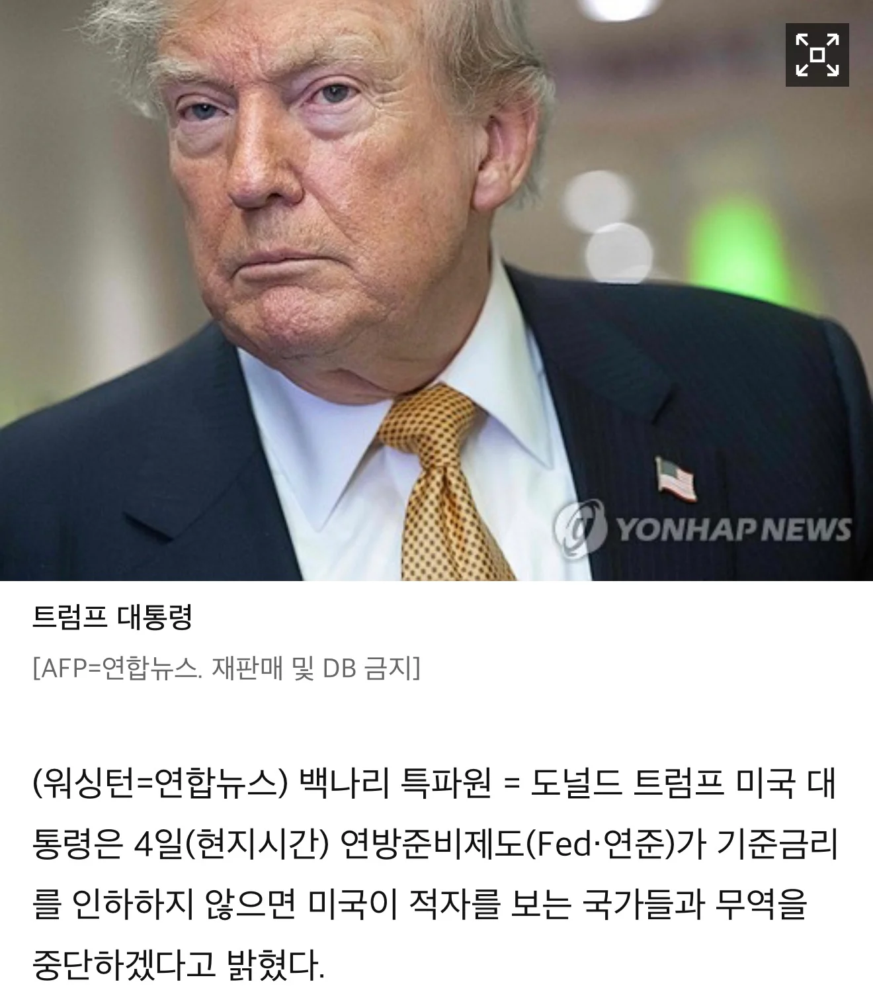

핵이나 만들 준비하자

핵이나 만들 준비하자
미국 상대로 흑자 안보는 나라도 있나?
26년 데이터 기준. 순위는 금액 순위임 미국이 흑자를 보는 금액 순위
1위 네덜란드 2위 홍콩 3위 영국 4위 스위스 5위 UAE 6위 싱가포르 7위 브라질 8위 호주 9위 벨기에 10위 파나마
유럽국가들은 보통 우러전때문에 러시아 천연자원을 못사서 미국 천연자원 사오느라 흑자인듯함
참고로 트럼프가 처음 전 세계를 상대로 관세 부과하겠다면서 무슨 그래프 보여주고 한거 기억나냐? 그때도 영국은 미국 상대로 무역 적자였는데 관세쳐맞음 개병신 트럼프 ㅋㅋㅋㅋㅋㅋㅋ
??? 그럼 달러패권 버리고
지혼자 고립하세요 병신인가 ㅋㅋㅋ
물가 천원돌파!
반도체 안필요해?
저거 우리한테 하는말이 아니라
저걸 좋아하는 멍청한 미국인들한테 하는소리고 또 그게 먹힘.. ㅋㅋㅋ
반도체 가격 10배쯤 부르면 알트먼이 가랑이 사이로 기어가려나 ㅋㅋㅋㅋ
ㅈ대로 하세요 병신새끼
미국의 최대수출상품은 "달러"라서 당연히
달러를찍어서 파니까 적자라고나오는게
당연한구조인데 진짜 병신같음..
니들은 소비로 커지는 경제에요
그걸 알면 이 지랄을 안 하겠지만
무역의 의미를 아나?
시벌 돈 버리려고 무역하는 새끼도 있나
중간선거 전에 물가 감당 가능해?